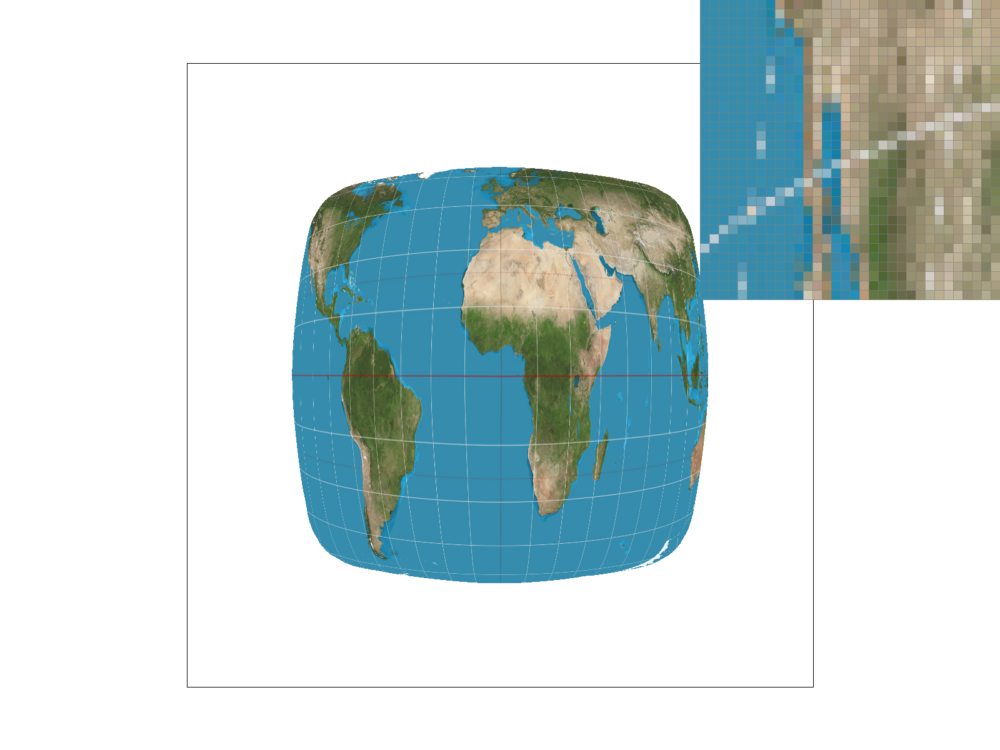
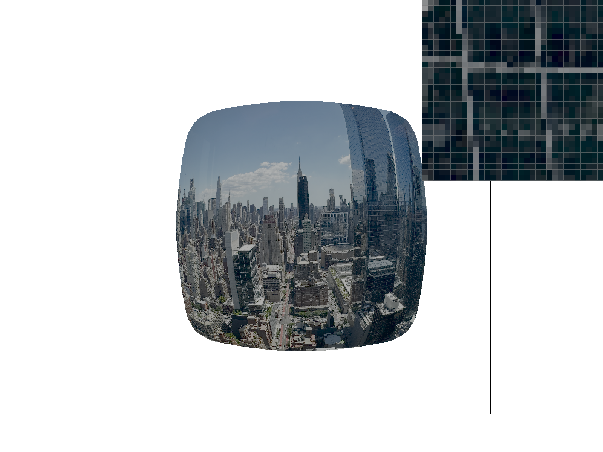

This assignment asked us to write a simple rasterizer using C++. The first two tasks focused on basic triangle rasterization with superpixel anti-aliasing. The third task was implementing three simple 2D transformation matrices. Task 4 asked us to implement barycentric coordinates, which I found tricky because we need to handle edge cases carefully; otherwise we can end up with white strips on the image. The final two tasks (Tasks 5–6) then asked us to implement texture mapping. Overall, through building these pieces end-to-end, I learned how the rasterization pipeline actually work (compared to only reading slides), and how small implementation details (like sampling and edge handling) can noticeably affect the final rendered result.
Task 1: Drawing Single-Color Triangles
In this task, we implemented a basic triangle rasterization routine. In void RasterizerImp::rasterize_triangle, we first compute the triangle’s bounding box (a rectangle that covers the triangle). Then, for each point inside that region, we perform the three-line inside-triangle test (ref: Lecture 2 slides). We structured this logic using two helper functions: is_inside_check and check_line.
That’s essentially it for this task. We did not implement the extra-credit optimizations, so the algorithm simply iterates over all points in the bounding box and checks whether each one is inside the triangle.
The two requested PNG files are shown below. We can see that basic/test.svg renders successfully (a), but when zooming in, artifacts are visible because we are not yet using superpixels for anti-aliasing (b). We address this issue in the next task.
(a) Screenshot of Test4.
(b) Screenshot of Zoomed-In Test4.
Task 2: Antialiasing by Supersampling
We then implemented supersampling to mitigate the artifact we mentioned above. There are two main parts we need to modify in the code: (1) We need to make the buffer size from H*W to H*W*sample_rate; the modifications include the constructor (RasterizerImp), fill_pixel, set_sample_rate, set_framebuffer_target. (2) Then, the main function for supersampling is inside the rasterize_triangle function without a lot of tricks: it's just another for loop going through all grids inside a single pixel, and then in resolve_to_framebuffer, we average the value over all grids inside a single pixel so we will show blurred results there. The results of four different sample rates on the triangle is shown below. It's obvious that supersampling does mitigate the sharp boundary artifact.
(a) Sample Rate = 1.
(b) Sample Rate = 4.
(c) Sample Rate = 9.
(d) Sample Rate = 16.
Task 3: Transforms
In this task, we implemented the homogeneous 3x3 matrices for translation, rotation, and scaling, following the formulas we learned in Lecture 4. With these transforms in place, we can successfully render robot.svg. After that, I played with the SVG by adding a skateboard (with two wheels) using extra polygons, and then applying additional rotate/translate transforms to the arms and legs so the robot can stay balanced on the skateboard. The default robot (a) and my updated robot (b, SVG file in the docs/ directory) are shown below:
(a) The Default Robot.
(b) My Updated Robot (Raw SVG files in GitHub).
Task 4: Barycentric coordinates
To implement this task, I reused the same structure as triangle rasterization: compute a bounding box for the triangle, iterate over pixels (and sub-pixel samples when supersampling is enabled), and then determine whether each point lies inside the triangle or not. For samples that are inside, I compute barycentric weights using an area/edge-function form (solving for α and β, then γ = 1 - α - β). The detailed formula is in the lecture slide. Finally, I interpolate the color by weighting the three vertex colors. It is worth mentioning that I added a small eps term in the barycentric denominators to reduce numerical instability near edges (e.g., when the denominator is extremely small due to floating point precision). This helps make the interpolation more stable at boundaries. Below is the requested screenshot of svg/basic/test7.svg with default viewing parameters and sample_rate = 1.
Task 4's Color Palette
Task 5: "Pixel sampling" for texture mapping
The goal of pixel sampling is to decide which color in the source texture space should be assigned to each sample in the rendered image. Since mapping from screen space to texture space is generally not one-to-one, different sampling strategies can produce noticeably different visual quality, especially when the texture contains high-frequency details. In our implementation, we first reuse the barycentric-coordinate computation from Task 4 to obtain the (u, v) texture coordinate for each sub-sample inside rasterize_textured_triangle. We then pass it to the sampling routines based on different pixel sampling mechanism in texture.cpp. Pixel sampling supports two modes:
Nearest sampling: map (u, v) to the closest texel and return that texel’s color.
Bilinear sampling: locate the continuous texel-space position, fetch the four neighboring texels, and perform LERP along x and y to produce a smoother result.
An example is shown below. Here we map an example high-resolution map (2058×1036) onto a relatively small SVG. With Nearest sampling and sample_rate = 1 (a), aliasing becomes severe around high-frequency features (e.g., fine text such as latitude/longitude). This can be improved either by (1) sampling from multiple nearby texels (bilinear pixel sampling) or (2) increasing the supersampling rate so each pixel averages multiple sub-samples. As a result, (b) and (c) look cleaner than (a), and (d) produces the smoothest output.
(a) Nearest, Sample Rate = 1.
(b) Nearest, Sample Rate = 16.

(c) Bilinear, Sample Rate = 1.
(d) Bilinear, Sample Rate = 16.
Task 6: "Level Sampling" with mipmaps for texture mapping
In this task, we implement mipmapping and level sampling. The main idea is to preprocess the texture into a multi-level pyramid (level 0 is the original image, level 1 is downsampled by 2, and so on). During rendering, we estimate how much the texture coordinates change per screen pixel; that rate of change determines which mip level should be used. Compared to Task 5, the pixel sampling logic (nearest vs bilinear within a level) remains the same, but we additionally select the appropriate level before sampling. Following the spec, we compute the barycentric texture coordinates for three screen-space positions: (x, y), (x+1, y), and (x, y+1). These three UVs become sp.p_uv, sp.p_dx_uv, and sp.p_dy_uv, respectively. In texture.cpp, get_level(sp) uses the differences (sp.p_dx_uv - sp.p_uv) and (sp.p_dy_uv - sp.p_uv), scaled by texture resolution, and then take the maximum L2 norm of these two differential vectors and compute a clamped log2 to obtain the mip level. We support three level-sampling strategies:
L_ZERO: always sample from mip level 0 (equivalent to Task 5 behavior).
L_NEAREST: sample from the nearest integer mip level returned by get_level.
L_LINEAR: sample from the two neighboring mip levels and linearly interpolate between them.
With level sampling, we now have three level-sampling strategies, two pixel-sampling strategies, and multiple supersampling settings. Each technique trades compute/memory for improved antialiasing:
Supersampling increases both computation and sample-buffer storage by a factor of sample_rate.
Bilinear pixel sampling costs ~4 texel fetches per sample (vs 1 for nearest).
Mipmapping increases texture storage by less than 2× overall (since 1 + 1/4 + 1/16 + ... < 2) and adds extra work to estimate the mip level (computing UV at x+1 and y+1).
L_LINEAR (level interpolation) requires sampling from two mip levels and interpolating between them. Therefore, it can be 2x the compute compared to L_NEAREST
We use an NYC skycrapers as an example image as it contains a lot of high-frequency textures and thus can easily show the differnces between different methods. As shown below, using a non-zero level-sampling strategy improves visual quality, and bilinear pixel sampling further smooths the results. The zoomed-in region highlights the building window area: combining mipmapping with bilinear sampling produces cleaner and more stable edges, while using only one technique yields intermediate quality. The worst case is sampling directly from level 0 without additional antialiasing techniques.

(a) L_ZERO + P_NEAREST
(b) L_ZERO + P_LINEAR
(c) L_NEAREST + P_NEAREST
(d) L_NEAREST + P_LINEAR
Additional Notes: LLM Disclosure
We used Cursor IDE during development, so autocomplete was occasionally applied. We also used an LLM to refine the wording in this write-up. However, the student completed the homework independently without using prior homework solutions or online resources. The student is responsible for all submitted code and write-up content.